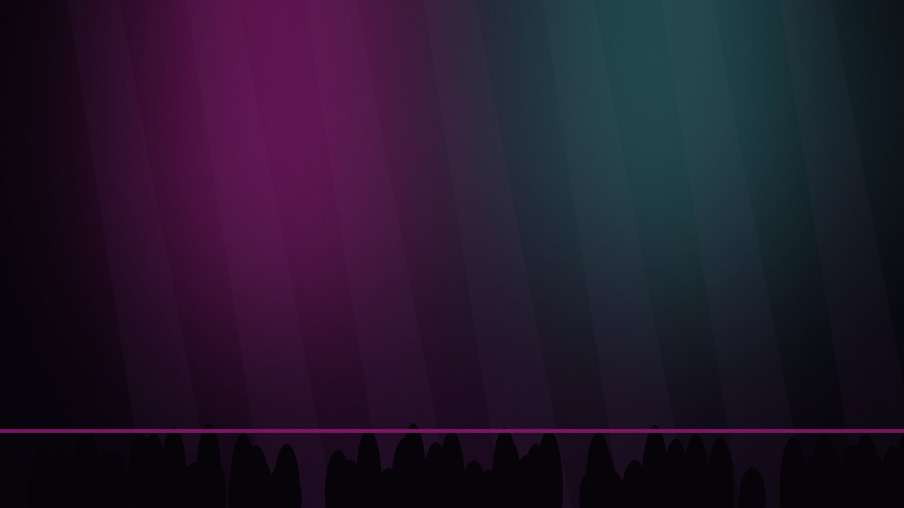

Som
Clube Totentanz
Sistema de som e acústica.
ESTÚDIO NEON
Som, luz e cartaz

Fazemos a noite parecer mais alta
Som ao vivo, desenho de luz e cartazes para clubes em Night City.
FALAR CONNOSCO
Trabalho

Luz
Afterlife
Desenho de luz do salão.
Cartaz
Série Kabuki
Seis cartazes serigrafados.